La manera más sencilla de enviar flores a tus familiares en Cuba.
Arreglos Florales
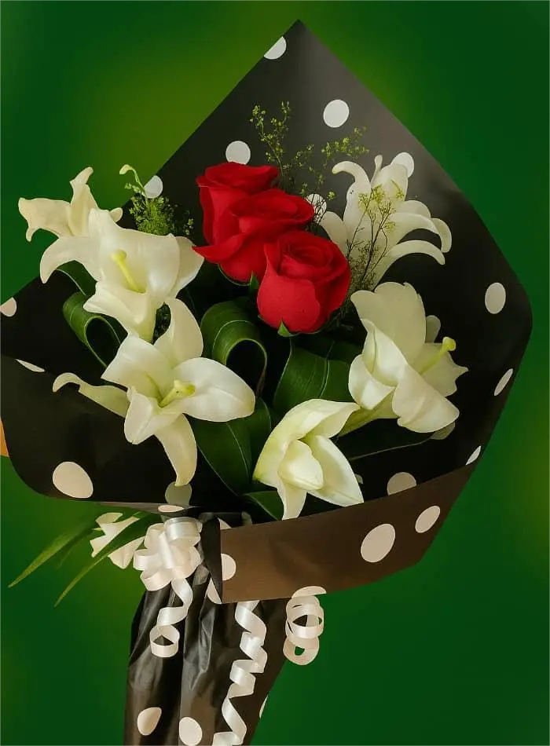
Jardín Secreto
Ver detalles
Jardín Secreto (6 lirios, 3 rosas)
Un susurro de esperanza que termina diciendo que es ideal para celebrar un nuevo comienzo.
Mantén los tallos en agua fresca y corta un poco sus extremos cada dos días para prolongar su belleza.
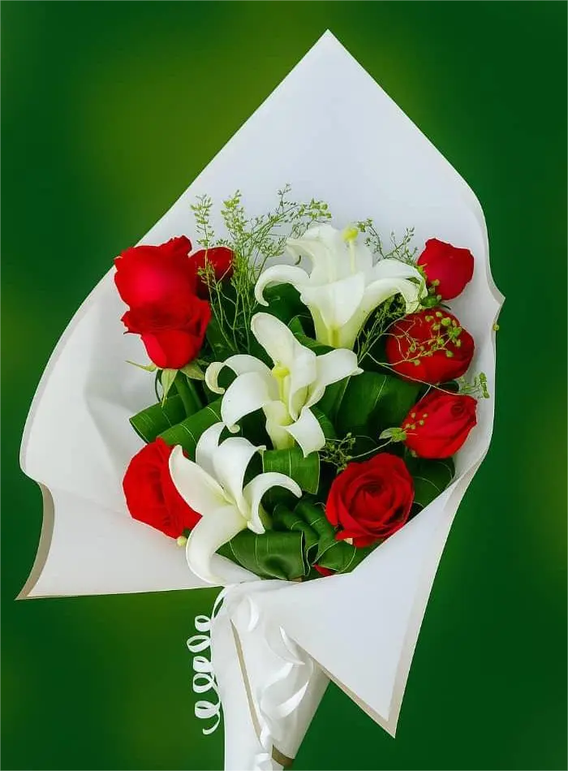
Elegancia Natural
Ver detalles
Elegancia Natural (6 rosas, 3 lirios)
La fuerza del amor se suaviza con la calma de los lirios, un equilibrio perfecto que es ideal para expresar gratitud profunda.
Evita la luz directa del sol y cambia el agua con frecuencia para conservar su frescura.
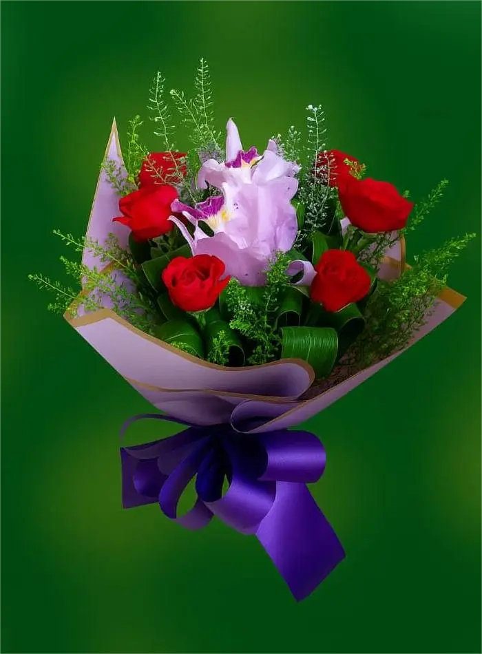
Caricia Floral
Ver detalles
Caricia Floral (4 orquídeas, 6 rosas)
La delicadeza de las orquídeas junto a la intensidad de las rosas es un abrazo silencioso que es ideal para un gesto de ternura inolvidable.
Rocía ligeramente las orquídeas y mantén las rosas en agua limpia para que ambas florezcan más tiempo.
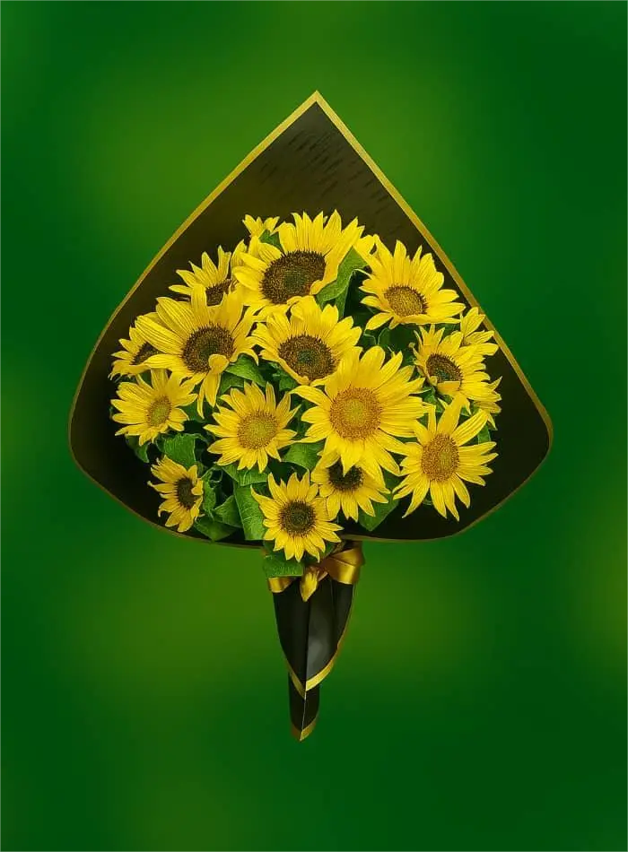
Sol de Alegría
Ver detalles
Sol de Alegría (15 girasoles)
La luz dorada de los girasoles es un canto al optimismo, un reflejo del sol que es ideal para regalar alegría en días oscuros.
Colócalos en un lugar iluminado y cambia el agua cada dos días para mantener su vitalidad.
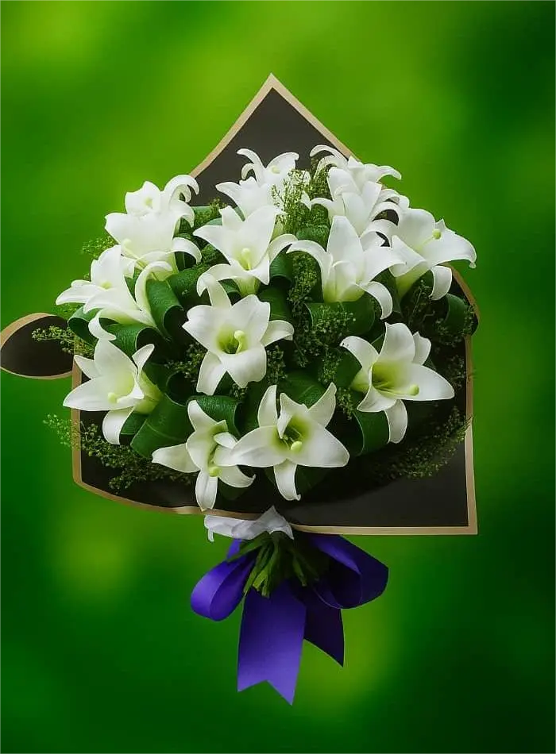
Pureza Blanca
Ver detalles
Pureza Blanca (20 lirios)
La blancura de los lirios es un símbolo de paz interior, un silencio que acaricia el alma y es ideal para momentos de reflexión espiritual.
Manténlos en agua fresca y retira las flores marchitas para prolongar su pureza.
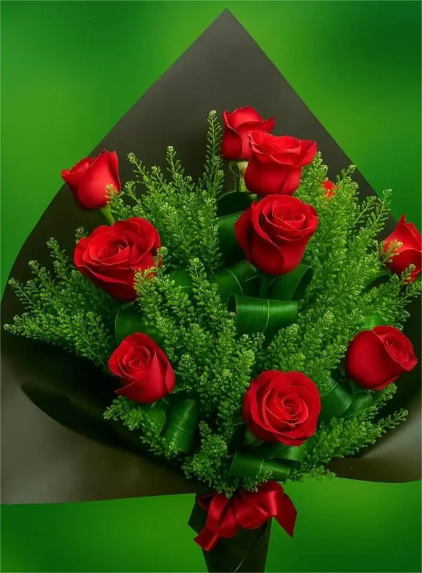
Suspiro de Amor
Ver detalles
Suspiro de Amor (10 rosas)
Cada rosa es un latido que se convierte en suspiro, un lenguaje secreto que es ideal para declarar un amor sincero.
Corta los tallos en diagonal y evita corrientes de aire para que duren más.
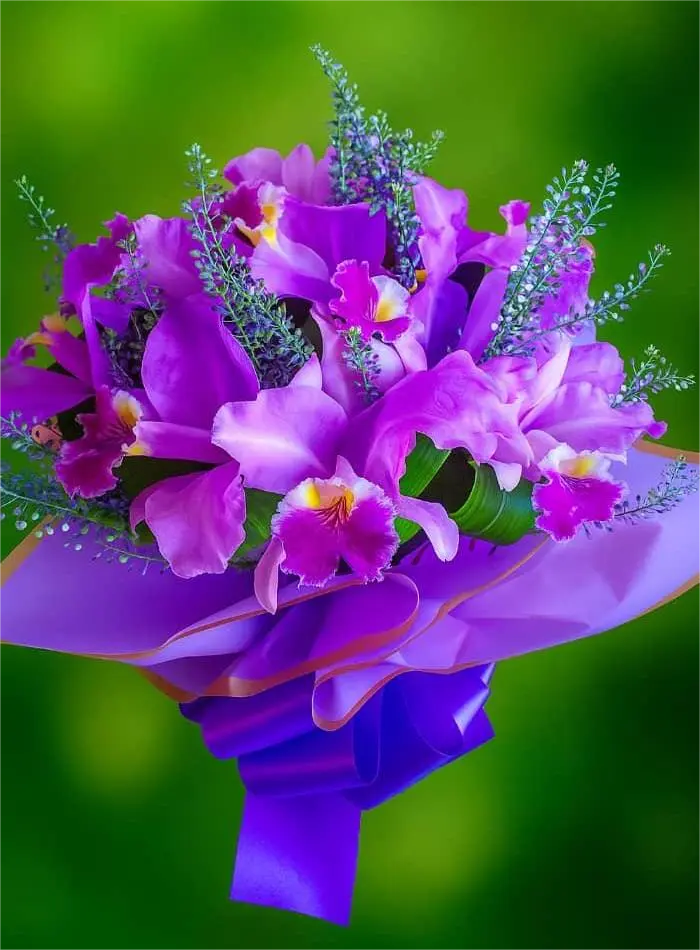
Dulce Encanto
Ver detalles
Dulce Encanto (10 orquídeas)
La elegancia de las orquídeas es un misterio que florece en silencio, ideal para transmitir admiración y respeto.
Rocía sus pétalos con agua y mantenlas en un ambiente húmedo para conservar su encanto.
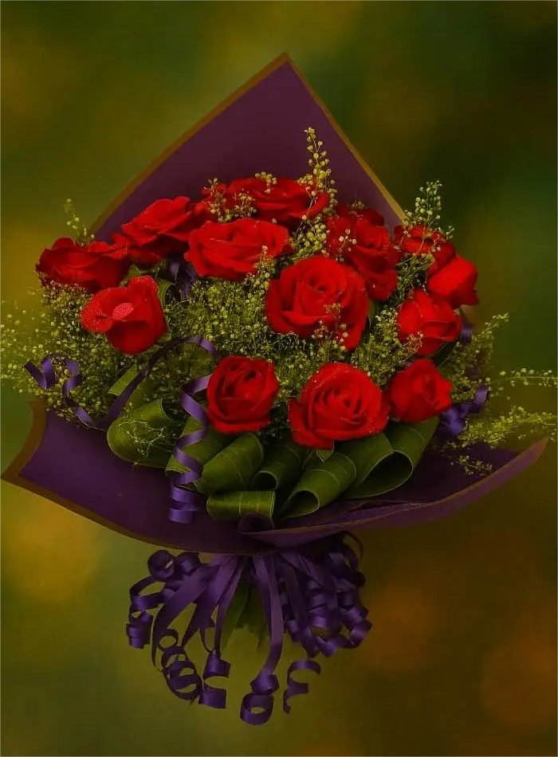
Día Especial
Ver detalles
Día Especial (20 rosas)
Veinte rosas que se convierten en un coro de emociones, un regalo que es ideal para marcar un día inolvidable.
Cambia el agua diariamente y corta los tallos para que mantengan su frescura.
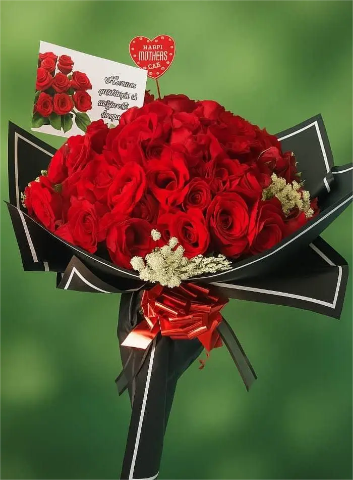
Pasión Roja
Ver detalles
Pasión Roja (100 rosas)
Un océano de rosas rojas que grita eternidad, un gesto desbordante que es ideal para un amor sin límites.
Usa un florero grande con agua abundante y retira hojas sumergidas para evitar que se marchiten rápido.
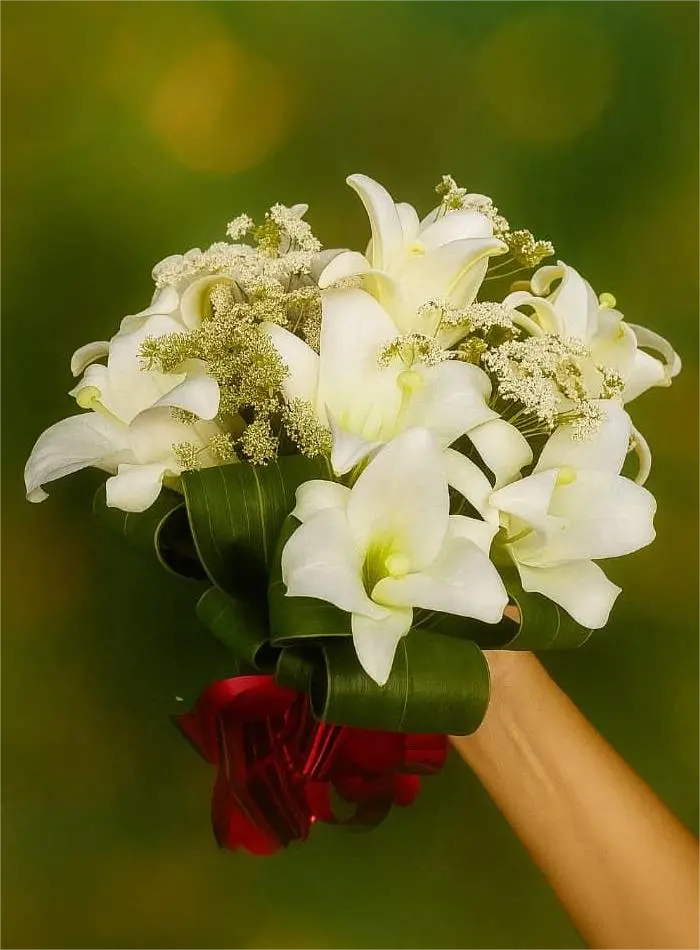
Paz y Luz
Ver detalles
Paz y Luz (10 lirios)
Los lirios blancos son un faro silencioso que ilumina el alma, ideal para transmitir serenidad en momentos difíciles.
Manténlos en agua fresca y evita la exposición directa al calor para conservar su luz.
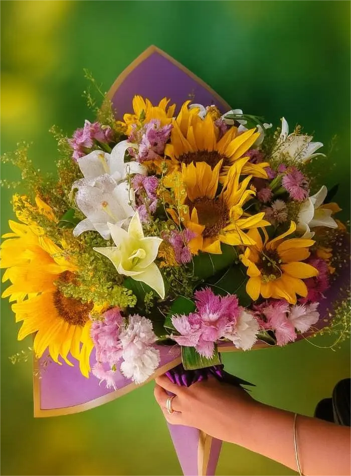
Canto del Sol
Ver detalles
Canto del Sol (10 girasoles, 10 lirios)
La energía del sol se une con la calma de los lirios, un canto de esperanza que es ideal para celebrar la vida.
Cambia el agua con frecuencia y corta los tallos en diagonal para mantenerlos radiantes.
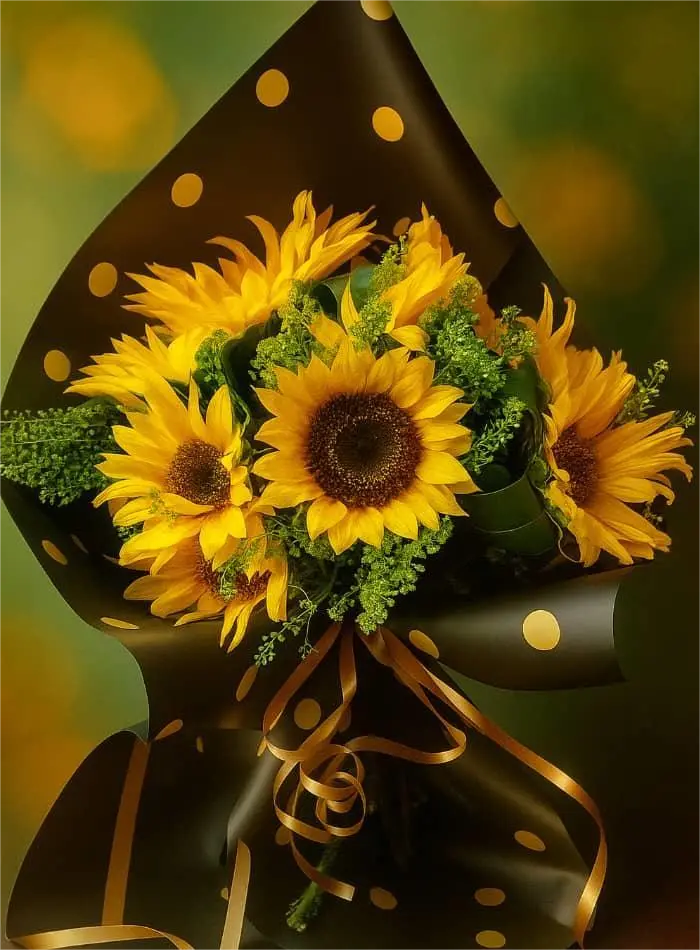
Sonrisa Dorada
Ver detalles
Sonrisa Dorada (10 girasoles)
Cada girasol es una sonrisa que se abre al mundo, ideal para regalar optimismo y amistad sincera.
Colócalos en un lugar iluminado y cambia el agua cada dos días para mantener su alegría.
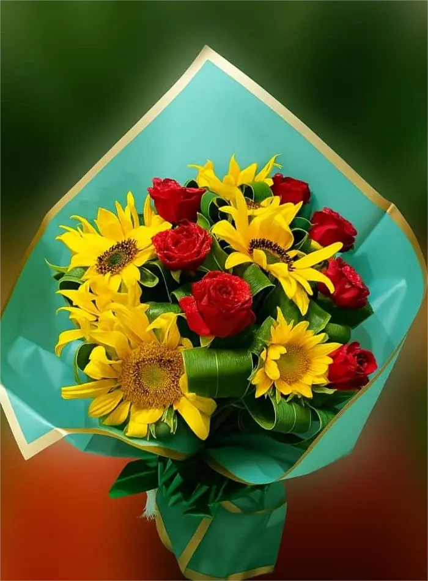
Primavera Viva
Ver detalles
Primavera Viva (6 girasoles, 8 rosas)
La fuerza del sol y la pasión de las rosas se funden en un estallido de vida, ideal para celebrar la llegada de nuevos comienzos.
Manténlos en agua fresca y corta los tallos regularmente para prolongar su frescura.
Vuelo de Amor
Ver detalles
Vuelo de Amor (15 rosas)
Quince rosas que vuelan como mariposas rojas, un susurro ardiente que es ideal para un amor apasionado.
Cambia el agua cada día y evita la exposición directa al sol para que duren más.
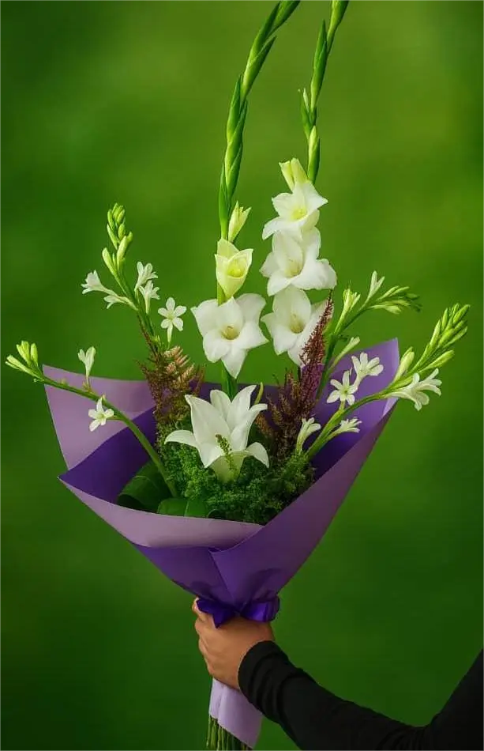
Luz Eterna
Ver detalles
Luz Eterna (2 gladiolos, 2 lirios, 4 azucenas)
La unión de gladiolos, lirios y azucenas es un símbolo de eternidad, ideal para honrar recuerdos que nunca mueren.
Manténlos en agua fresca y retira las flores marchitas para conservar su armonía.
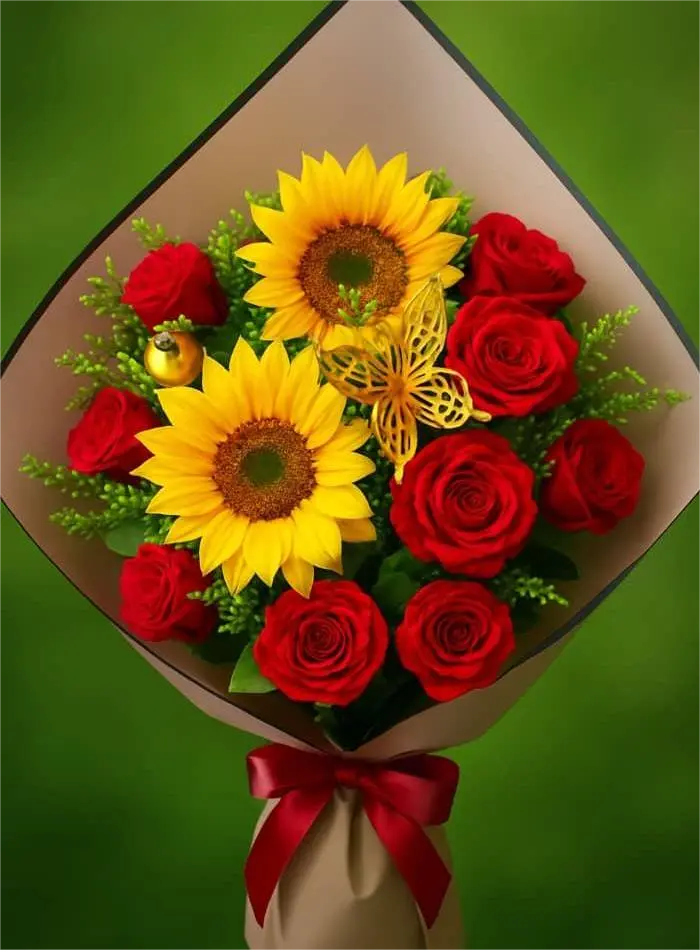
Mariposa Dorada
Ver detalles
Mariposa Dorada (4 girasoles, 14 rosas y adorno)
La calidez del sol y la pasión de las rosas se convierten en un vuelo dorado, ideal para celebrar la magia de un encuentro especial.
Cambia el agua con frecuencia y cuida los adornos para que el ramo conserve su elegancia.
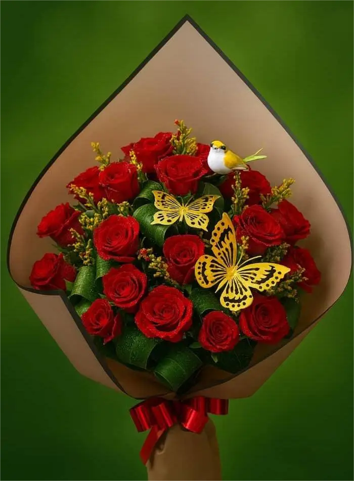
Amor Eterno
Ver detalles
Amor Eterno (25 rosas y adorno)
Veinticinco rosas que se convierten en promesa, un gesto profundo que es ideal para sellar un amor eterno.
Manténlas en agua limpia y corta los tallos en diagonal para prolongar su belleza.
Sobre Nosotros
¿Quiénes somos?
Somos un negocio familiar con más de 10 años de experiencia
en el arte floral en Cuba. Nuestra pasión es transformar flores
frescas en mensajes de amor, gratitud y esperanza. Cada arreglo
que elaboramos lleva consigo el cuidado artesanal que nos distingue.
¿Cómo funcionan los encargos?
Los ramos de tu preferencia se solicitan a través de cualquiera de
las redes indicadas en nuestra sección de contacto. Allí puedes confirmar
precios y definir la dirección de entrega. Una vez
realizado el pedido, preparamos tu arreglo con dedicación y lo llevamos
puntualmente hasta la dirección dada. Puedes realizar tu pedido desde cualquier lugar del mundo. Actualmente las entregas se realizan
únicamente en Cuba, específicamente en las provincias de La Habana y Artemisa.
Nuestro compromiso
Nos comprometemos a:
Ofrecer flores frescas y seleccionadas con esmero.
Mantener un servicio confiable y responsable.
Convertir cada pedido en un recuerdo inolvidable para quien lo recibe.